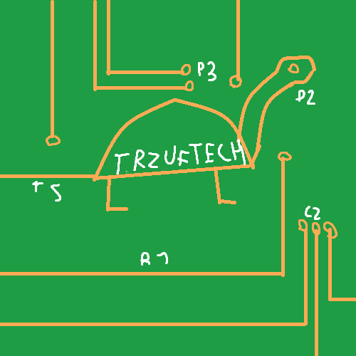

TRzuf Tech
TRzuf Tech to zespół tworzący wole oprogramowanie np Rzuf Tube czy TRTWS (Trzuf Tech Wiki Software)
osoby w zespole Trzuf Tech Project
Rzuf
tele
Projekty Trzuf Tech
Rzuf Tube
strona z osadzonymi filami z YT
TRTWS(Trzuf Tech Wiki Software)
Szablon do Wiki tworznych przez Trzuf Tech
Repozytorium Rzuf Tube na Github
Repozytorium TRTWS na Github
Trzuf Tech ©